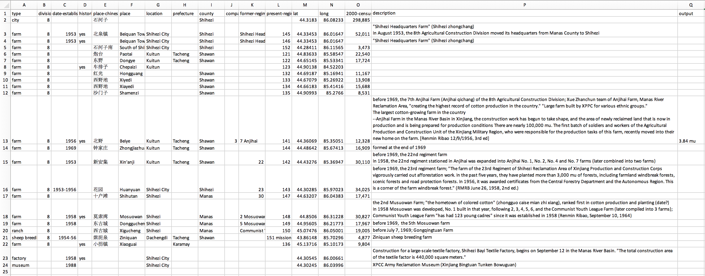

Historic Farms of the 8th Agricultural Division of the XPCC

□ = "short form" population data from 2000 census
Data Source: Fang Yingkai and Li Fushen, The History of the Xinjiang Corps’ Reclamation and Frontier Defense (Xinjiang Bingtuan Tunkenchang Lishi), Volume 1 (Xinjiang Keji Weisheng Chubanshe, 1997); Renmin Ribao 人民日报, 1959 - 1965; and Township map of Xinjiang with 2000 Census short form data, link.
This static map visualizes the historic reclamation farms of the 8th Agricultural Division of the Xinjiang Produciton and Construction Corps. It shows where labor was situated. The map also includes census data from 2000 to roughly show population, concentrated on the present-day city of Shihezi. The primary dataset used for this map collected information on the establishment of each farm and tracked their former names to assist in spatially locating the working bodies of this research.

×